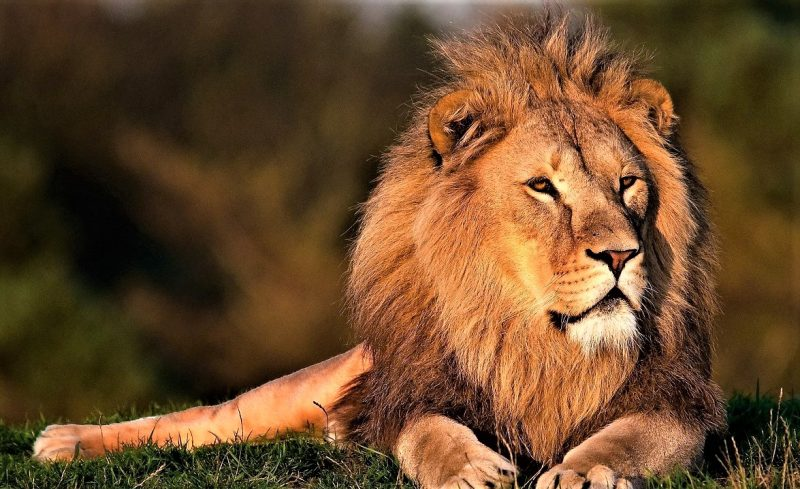
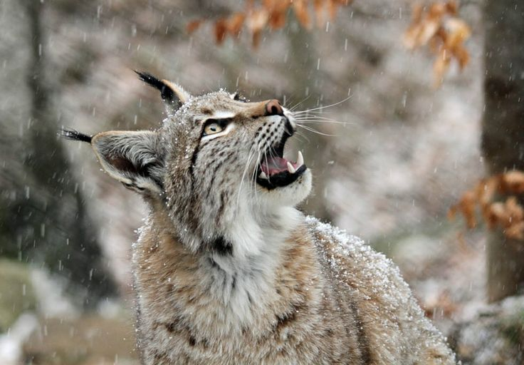

¿Qué son los animales carnívoros?
Los animales carnívoros o zoófagos son aquellos organismos consumidores cuya dieta se compone exclusivamente de la materia orgánica de otros animales. Son organismos heterótrofos. En esta clasificación se consideran tanto a los animales depredadores, como a los carroñeros.


Aunque la sola mención de la palabra carnívoro nos hace pensar en los grandes depredadores africanos o asiáticos (cuando no en los prehistóricos, como ciertas especies de dinosaurios), en realidad existe un numerosísimo universo de animales que obtienen su energía y materia de esta forma.
No se trata de una alimentación exclusiva de carnes rojas o de mamíferos, sino de las carnes de otro animal. Existen, incluso, plantas que complementan su nutrición autótrofa con métodos de digestión de insectos (las llamadas plantas carnívoras).
El carnivorismo surgió como método de nutrición desde tiempos primitivos, como parte de la competencia evolutiva de la vida. Constituyó un importante motor de la selección natural, a medida que presas y depredadores compitieron durante millones de años por adaptarse a las estrategias del otro.
Características
- Los grandes carnívoros terrestres suelen tener dientes filosos para desgarrar la carne, o curvos para sujetar a la presa e impedirle el escape.
- En algunos casos, cuentan también con garras filosas, y en otros con órganos modificados, como los dientes de las serpientes venenosas, capaces de inocular a sus presas una suerte de enzimas digestivas modificadas que producen distintos tipos de parálisis o la muerte.
- Muchos carnívoros son también hábiles cazadores, dotados de instinto y de mecanismos para acechar, perseguir o sorprender a sus presas, maximizando así sus chances de alimentarse. Muchos tienen grandes mandíbulas para morder, como los tiburones.
- En el caso de los insectos, crustáceos y arácnidos, poseen tenazas o apéndices fuertes para sujetar presas, romper sus defensas o extraerlas de sus escondites. Lo mismo pueden hacer las aves carnívoras con sus picos fuertes, filosos y curvos, y sus garras afiladas, idóneos para sujetar y desgarrar las capas externas del animal y acceder a la carne más blanda y nutritiva.
- También hay carnívoros marinos como la ballena azul emplean métodos de filtrado del agua para quedarse con las grandes porciones de crustáceos y microorganismos de las que se alimentan. Para ello poseen barbas internas y enormes bocas.
- Por otro lado, los carnívoros suelen tener sistemas digestivos más directos y simples, al menos en comparación con los herbívoros, ya que estos últimos deben digerir en distintas etapas la materia orgánica vegetal, mientras que la carne animal es mucho más simple de digerir.